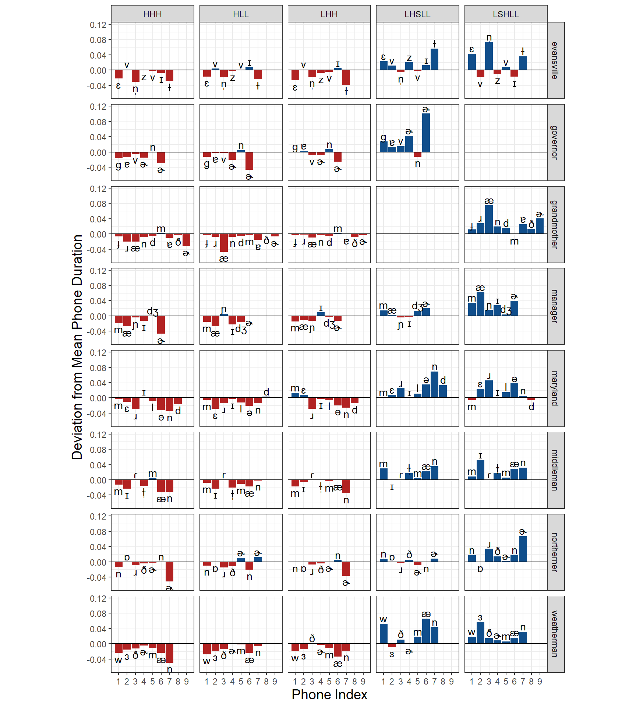

library(rPraat) # Load Praat-related fileslibrary(tidyverse) # Tidy Functionalitylibrary(sosprosody) # Helper functions for prosody researchlibrary(furrr) # Parallelization for loading fileslibrary(targets) # For targets integrationlibrary(forecast) # Helps with pitch tracking errorssource("Helpers/EDA_helpers.R") # Helper functions not general enough for {sosprosody}source("Helpers/pitcherror_helpers.R")# Directories to pitchtiers and textgridsptdir <- r"(02_PossibleRecordings\PitchTiers\)"tgdir <- r"(02_PossibleRecordings\MFA_textgrids\)"
File loading and processing
Using the functions from sosprosody
Here I load the textgrid files and label which parts of the utterances are the nuclear words. Then I extract the nuclear regions from the textgrids. Finally, I load the pitchtier files with the following preprocesing steps:
Label the pitch points that fall in the nuclear regions
Smooth the pitch contours with 5-point running median smoothing
Normalize the time such that the first pitch point in the utterance is at time 0 and the last pitch point is at 1
Code
# Load textgridtextgrid_df <-tar_read("process_textgrids") |>mutate(is_nuclear = word_label %in% nuclear_words,wordset =ifelse(utterance %in% three_syl_words, "syl3", "syl2")) # Remove files that have different pronunciations, specifically when# "governor" is transcribed as "g0v_@_n@r" instead of "g0v_@r_n@r"tar_load('files_to_omit')
# Split the recordings by sessioncurrent_session <-"syl3.01"# Update this in later sections to change outputssession_pitchtiers <-split(pitchtier_df, ~ wordset + session, drop =TRUE)session_averages <-split(avg_contour_df, ~ wordset + session, drop =TRUE)
Three Syllable Words
In this section I will focus on the three syllable words. I will do basically the same analyses for each session’s recordings, but the observations will of course differ. The helpers from the {sosprosody} package and the EDA_helpers.R file make these analyses easier to do consistently.
Session 1
The three syllable words from session 1 are as follows:
Time-normalized pitch contours for each recording. Average pitch contours shown as 15 equally-spaced points for the prenuclear region (blue) and 30 equally-spaced points for the nuclear region(red).
Pitch tracking errors
Code
error_check <- session_pitchtiers[[current_session]] |>group_by(file) |>code_errors_threshold() |>cluster_errors() |>check_pitch_doubling()error_check |>filter(any(error)) |>ggplot(aes(x = timepoint, y = hz, group = file, color = is_nuclear)) +geom_point(data =filter(error_check, error), color ='red') +geom_line(alpha = .8) +theme_bw() +facet_grid(utterance ~ tune) +theme(panel.grid.minor =element_blank()) +scale_color_manual(values =c("dodgerblue4", "firebrick"))+ylab("Frequency (Hz)")
And here are the files that had pitch errors detected. The table displays how many errors were found in both the prenuclear and nuclear regions. Overall, pitch tracking errors tend to be at the beginnings of utterances.
Here I limit the investigation to only the nuclear portion of the utterance and calculate the duration of the nuclear tune based on the first and last nuclear pitch point.
In the following plot, I show the distribution of duration measurements for each utterance and tune condition. Each facet’s distribution is shown in comparison to the aggregate distribution for the tune, in red. For example, the grandmother-HHH distribution, in black, is on the higher end of total HHH distribution. Moreover, we can see that grandmother tends to be on the high end of the duration distribution looking across all tune types.
Next I show the same exact data, but the aggregate distribution is now aggregated by the utterance instead of the tune. This aggregate distribution is shown in blue (so as to not confuse it with the previous red plot) Here we can see various degrees of bimodality where the bitonal pitch accents have higher durations. However, this comes with the caveat that there are more recordings with L*+H than L+H* because the L+H*LL recordings had substantial creakiness at the phrasal accent.
In this section I will be wrangling the duration measurements from the textgrids produced by the Montreal forced aligner.
Important
These durations will be slightly different from the durations plotted in the previous histogram. If there are pitch points that occur beyond the word-final boundary placed by MFA, then duration as defined by the distance between the first and last pitch pulse (i.e., in the previous histograms) will be slightly longer than the distance as defined by the word-interval length. The calculations that follow use the textgrid-based measurements.
When calculating the average lengths of the nuclear words, averaging is built up across representations. Recall that the MFA yields a TextGrid with two tiers: words and phones. Taking the word branning for example, what I’m doing is not averaging across the words-tier interval for [branning]. Rather, I am taking the intervals for each phone and averaging those individually. That is, averaging the [b] interval on the phones-tier. After averaging each phone and shifting them such that the starting duration occurs at 0, the total duration is defined as the cumulative sum of the phone durations. This averaging is done first within each tune-utterance pair, then those averages are themselves averaged within each utterance to minimize uneven sampling within pairs.
First, we will extract the durations of the nuclear words in each recording. This is defined by simply the end of the words interval corresponding to the word minus the start of that interval. Note these boundaries are also aligned to start of the first phone interval and end of the last phone interval for the word.
Next, we will calculate the average phone duration of each tune-utterance pair. For example, the average duration of each phone from all recordings of branning with HLL intonation. The same is done for each recording of branning with LHH intonation separately.
Code
avg_phone_duration_by_tuneutt <- textgrid_df |>filter(is_nuclear) |># Get the total number of takes for the target tune/utterance, not used thoughgroup_by(utterance, tune, session) |>mutate(n_takes =max(as.integer(take))) |># Establish unique IDs for each phonegroup_by(utterance,tune,session, take) |>mutate(phone_i =row_number()) |># Calculate average duration of each phonegroup_by(utterance, tune,session, phone_i,wordset) |>summarize(phone_label =first(phone_label),avg_duration =mean(phone_end - phone_start),n_takes =max(n_takes)) |>group_by(utterance, session, tune, wordset) |># Wrangle durations into starting and ending positions for intervalsmutate(endpoint =cumsum(avg_duration),startpoint =c(0, lead(endpoint)[-n()]))
Now that we have the average duration of each phone within each pair, we can average the phones across all tunes. The starting point of the first phone remains at 0, but the starting point of each successive phone is the cumulative sum of each phone duration. Recall that this two-step averaging process within pairs (previous) and then within utterances (current) is done to minimize skewing the durations in favor of pairs with more takes.
# Take the average duration of each phone from each utterance/tune pair, then# compare this to the average duration of each phone when averaged across all# tunes within the utteranceavg_deviations <- session_avg_duration_tuneutt[[current_session]] |>left_join(dplyr::select(session_avg_duration_utt[[current_session]], utterance, phone_i, avg_utt_duration = avg_duration)) |>mutate(deviation = avg_duration - avg_utt_duration)# Plot how far off the phone's duration is from the average duration# Positive = Phone in this tune is longer than average# Negative = Phone in this tune is shorter than averageavg_deviations |>mutate(color =ifelse(deviation <=0, 'firebrick', 'dodgerblue4'),textposition =ifelse(deviation >=0, deviation + .015, deviation - .015)) |>ggplot(aes(x = phone_i, y = deviation, fill =I(color))) +geom_bar(stat ='identity') +geom_text(aes(label = phone_label, y = textposition)) +facet_grid(utterance ~ tune) +geom_hline(yintercept=0) +scale_x_continuous(breaks=1:9, labels =1:9) +coord_fixed(ratio =9/.2) +xlab("Phone Index") +ylab("Deviation from Mean Phone Duration") +theme_bw() +theme(panel.grid.minor.x =element_blank(),panel.grid.major.y =element_line(size = .3),panel.grid.minor.y =element_line(size = .2),axis.title =element_text(size =14))

Average phone duration for utterance-tune pairs compared to the average phone duration across all tunes for an utterance. Deviations from the average are shown in milliseconds.
Now that we’ve gotten the average for each phone within each utterance, we can extract the average duration of the nuclear word. This is equivalent to the timestamp of the endpoint for the last phone from the previous calculation (hence why we computed the cumulative sums).
Code
# Get the average duration for each nuclear word based on the average# phone durations previously calculated. This df is essentially a simplified# version of avg_phone_duration_by utt containing the last endpoint value.# (recall the durations start from 0 but are not time-normalized out of 1)avg_nucword_duration <- avg_phone_duration_by_utt |>group_by(utterance, session, wordset) |>summarize(duration =last(endpoint))
Currently, we have at our disposal the nuclear word durations for each file and the average nuclear word for each utterance, built up from the phone durations within each tune-utterance pair then averaged across tunes (=within utterance). Now, we can see how far off each file’s duration is from its associated utterance average. By doing so we calculate how much we would need to shrink or stretch the nuclear word’s duration to match the average, i.e., the scaling factor
scaling_factor will be 1 if the file’s duration matches the average duration exactly
scaling_factor will be less than 1 (but greater than 0) if the file’s duration is greater than the average, indicating that the file would need to be shrunk. E.g., a factor of 0.5 indicates that the file’s duration should be shrunk by half.
scaling_factor will be greater than 1 if the file’s duration is less than the average, indicating that the file would need to be stretched. E.g., a factor of 2.0 indicates that the file’s duration should be doubled.
Now that we know how much each file needs to be shrunk or stretched, we can find out which file would require the least amount of duration manipulation. Conceptually, this is the same as evaluating which file’s duration is closest to the average duration. Note that this calculation is not just taking the minimum scaling factor, but rather the minimum of abs(1 - scaling_factor). As an intermediate step, we can check which file within each tune is closest to the average duration. Why would we care about this when we can get the absolute closest file (which we do next)? Well, we can feed these files to praatSauce, which extracts voice quality measures. This script suite is extremely computationally intensive and outputs an immense amount of data, so limiting the amount of files would be useful.
Code
# As an intermediate step, we can see which file within each tune is closest.minimally_scaled_files_by_tune <- file_scaling_factors |>mutate(keep =case_when(utterance =='northerner'& session =="01"~FALSE, utterance =='maryland'& session =="01"~FALSE, utterance =='weatherman'& session =='01'~FALSE,TRUE~TRUE)) |> dplyr::filter(keep) |>group_by(session,utterance,tune) |>mutate(dist_from_one =abs(1-scaling_factor),is_min =min(dist_from_one) == dist_from_one) |>filter(is_min) |>group_by(utterance, tune) |>slice_head(n=1)# Update this file if it's been deleted or if it needs to be changed,# the modification will feed into a target that tracks the file for changeswrite_lines(minimally_scaled_files_by_tune$file,"CalculatedFiles/chosen_recordings.txt")
Update 08/20/2022: I’m keeping the method to select the chosen recordings, but the average syllable durations are recalculated below to average across only the selected recordings. The reasoning behind this is that the textgrids from the MFA are ever so slightly off, so the syllable boundaries had to be fixed manually. This is too much work to do for 500+ files, but is manageable for about 70.
For each utterance, there is one recording for each tune that has the closest scaling factor to 1 (=minimum change). Out of all these tunes, we want to know, for each utterance, which tune has a scaling factor closest to 1. The plot below shows the scaling factors for each tune and each utterance.
Now we can tabulate which files are closest to the average. This will give us an easily accessable table containing the files and scaling factors we want to use.
Note
Recall that we’re using durations from the textgrids of the MFA. It’s important to realize that the precision of these intervals is on the scale of 10ms, hence two different recordings may have different durations on the millisecond scale but come up as having “the same” duration in the calculations below, hence why slice_head(n=1) is used.
Final files and scaling factors for session syl3.01
file
utterance
session
tune
file_duration
scaling_factor
evansville_01_HLL_007
evansville
01
HLL
0.66
0.9927273
governor_01_LHH_002
governor
01
LHH
0.60
1.0062500
grandmother_01_LHH_005
grandmother
01
LHH
0.76
1.0029240
manager_01_LHH_003
manager
01
LHH
0.65
1.0244689
maryland_01_LHH_002
maryland
01
LHH
0.63
1.0879365
middleman_01_LHH_002
middleman
01
LHH
0.71
1.0431925
northerner_01_HLL_004
northerner
01
HLL
0.61
0.9914130
weatherman_01_LHH_003
weatherman
01
LHH
0.68
1.1151961
This final table of values will be used to create the duration tiers for automatically scaling the audio files. The resulting duration-normalized files can then be resynthesized.